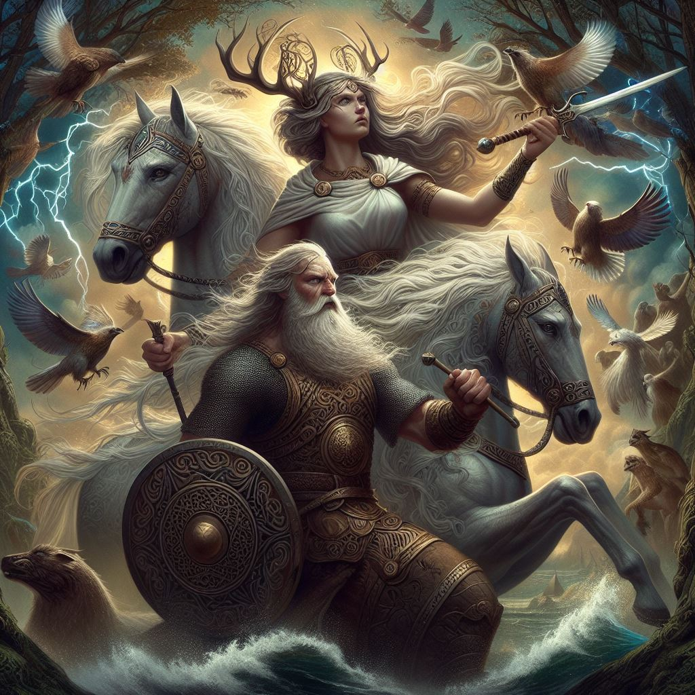
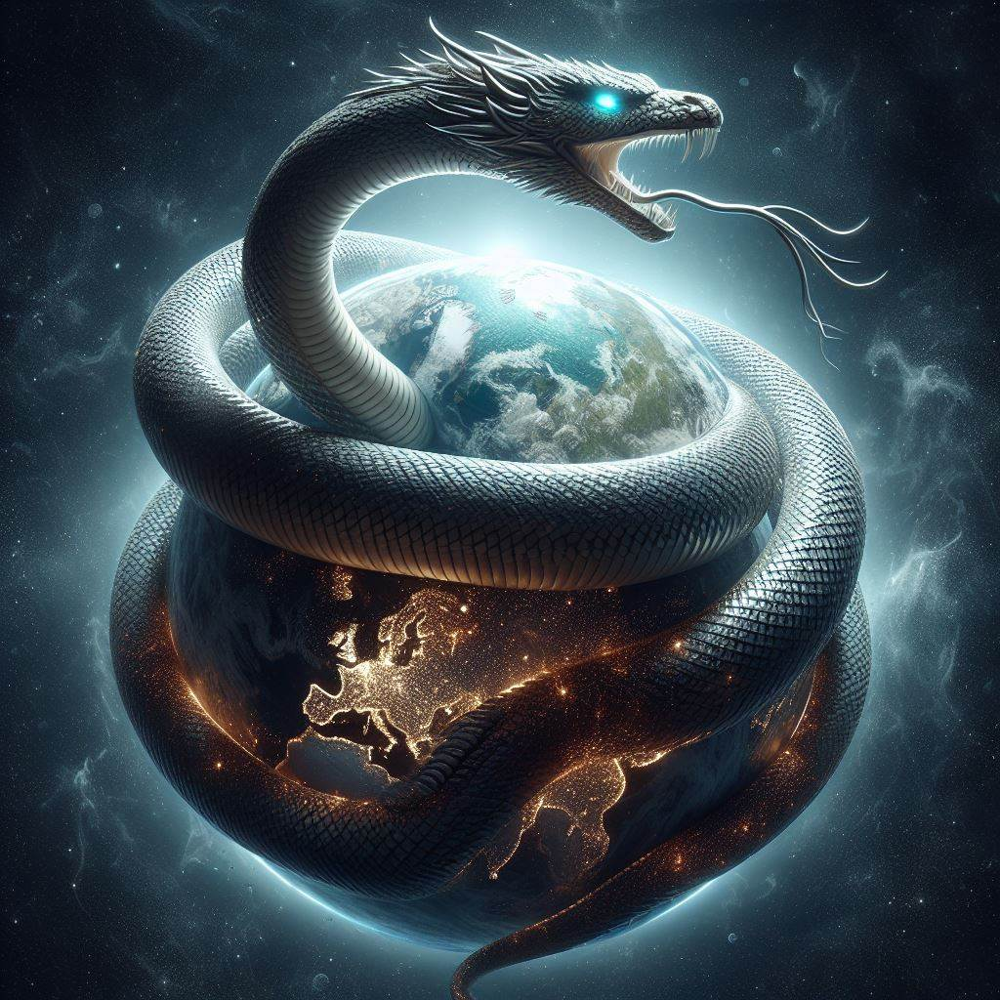
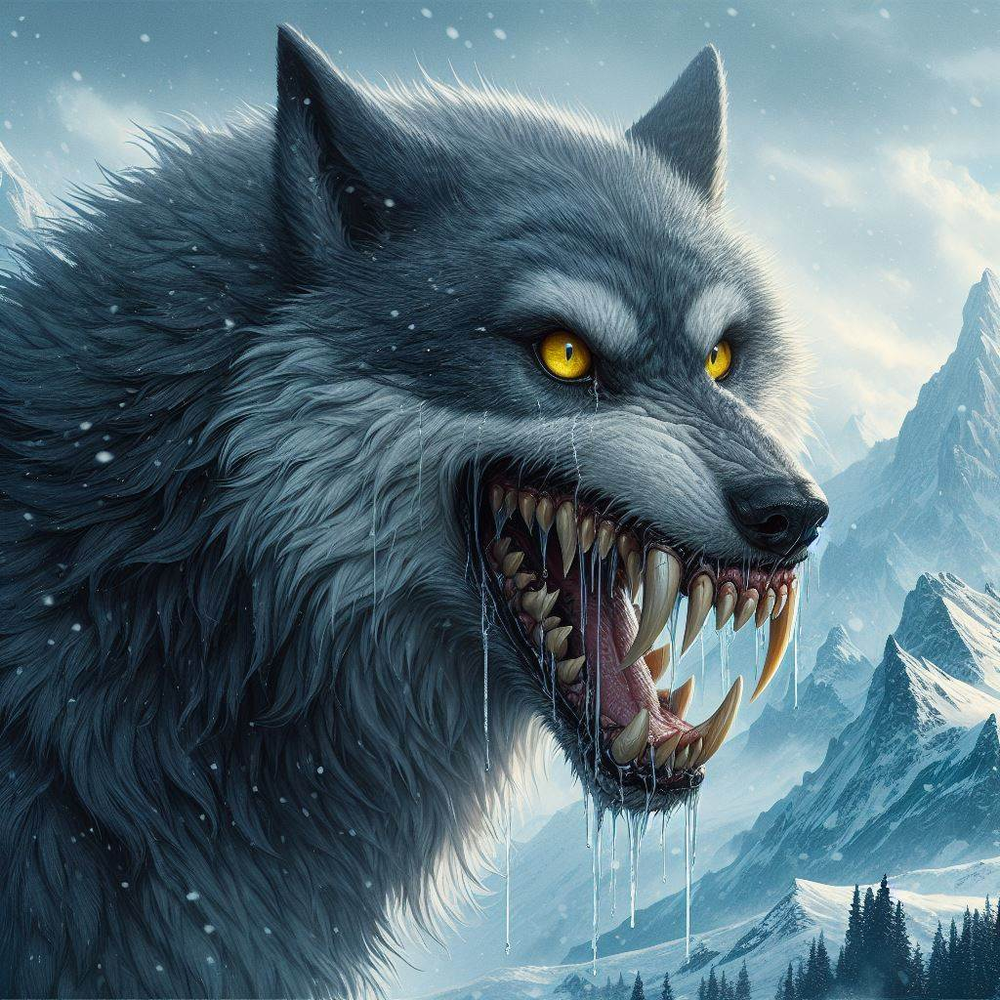
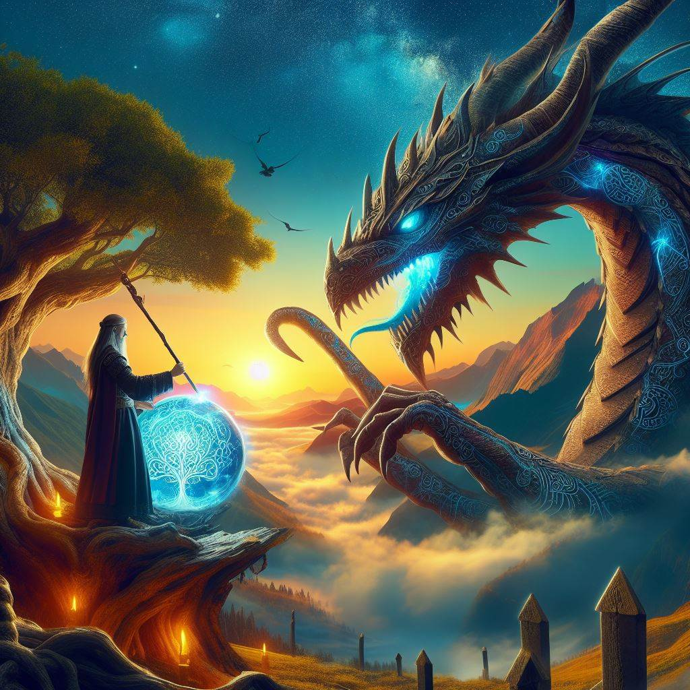

Norse Mythology
Norse Mythology refers to the Scandinavian mythological framework that was upheld during and around the time
of the Viking Age (c. 790- c. 1100 CE). Complete with a creation myth that has the first gods slaying a giant
and turning his body parts into the world, various realms spread out beneath the World Tree Yggdrasil, and the
eventual destruction of the known world in the Ragnarök, the Nordic mythological world is both complex and comprehensive.
Its polytheistic pantheon, headed by the one-eyed Odin, contains a great number of different gods and goddesses
who were venerated in customs integrated into the ancient Scandinavians' daily lives.
Æsir & Vanir
The gods themselves are boxed into two families. Firstly, there is the bigger Æsir family mostly connected with war and government,
which was in practice also used as an umbrella term for the main gods in general. It includes notables such as Odin, Thor, Loki,
Baldr, Hodr, Heimdall, and Týr.
Secondly, the smaller Vanir family contains fertility gods such as Njord,
Freyr, and Freyja. Despite them all living in Asgard, they do not always see eye-to-eye - which, admittedly,
is difficult considering Odin only has one eye, to begin with. In fact, they clash to the point of war
(the 'Vanir wars'; or 'Æsir-Vanir Wars') but exchange hostages after making peace and fuse their families through marriage.
The contrast between the Æsir and the Vanir has been argued to stem from oppositions in Viking society,
as the Vanir, with their focus on fertility, good harvests, and the climate, were popular in farming communities,
while the Æsir were seen to advise kings, lords, and their warriors in matters of war and governance. As such, the
peace made at the end of the Vanir wars might reflect the idea that society could only function through the combined
powers of both social classes.
Finally, besides these two divine classes, there were also female deities known as Dísir,
popular in private worship, Álfar (elves), Jǫtnar (giants), and Dvergar (dwarfs); enough to keep everyone busy, for sure.
Norse mythology offers a very rich world to get lost in.

Sources
Norse mythology is primarily attested in dialects of Old Norse, a North Germanic language spoken by the Scandinavian people during
the European Middle Ages and the ancestor of modern Scandinavian languages. The majority of these Old Norse texts were created
in Iceland, where the oral tradition stemming from the pre-Christian inhabitants of the island was collected and recorded in
manuscripts. This occurred primarily in the 13th century. These texts include the Prose Edda, composed in the 13th century by
the Icelandic scholar, lawspeaker, and historian Snorri Sturluson, and the Poetic Edda, a collection of poems from earlier
traditional material anonymously compiled in the 13th century.
Jörmungandr:
Is the Midgard Serpent (also World Serpent) in Norse mythology who encircles the realm of Midgard.
He is the son of the god Loki and the giantess Angrboða and brother of the great wolf Fenrir and Hel,
Queen of the Dead. At Ragnarök, the Twilight of the Gods, he slays and is slain by the god Thor.

Fenrir:
The wolf Fenrir is the son of Loki and the giantess Angrboda, Fenrir is the brother of Hel,
the goddess of the underworld and the serpent of Midgard. Fenrir is the father of the two wolves
Sköll and Hati Hróðvitnisson. It is predicted that Fenrir will kill Odin at Ragnarök, but the wolf
Fenrir will be killed shortly afterwards by Odin's son, Vidar.
The wolf Fenrir was initially kept in Asgard,
where Tyr was the only one brave enough to feed him. But when the Gods saw how fast and huge the wolf Fenrir grew,
from today. They decided to tie him to an extremely strong leash, so that he could hold the wolf Fenrir. The Gods
thought it was not safe, having him drift around Asgard.

Nidhogg: Corpse eater
Nidhogg is the dragon that lives in Hel, in the kingdom of Niflheim, at the root of the Yggdrasil tree.
Nidhogg feeds on the roots of Yggdrasil and the corpses of the dead

Huggin and Munin:
The two ravens that fly over the world, Midgard. The name Huginn means "thought" and Munin "memory or mind."
The two crows fly over the world every morning and return every evening. When they return, the ravens whisper
to Odin everything they have seen and heard. More information about Huginn and Muninn.